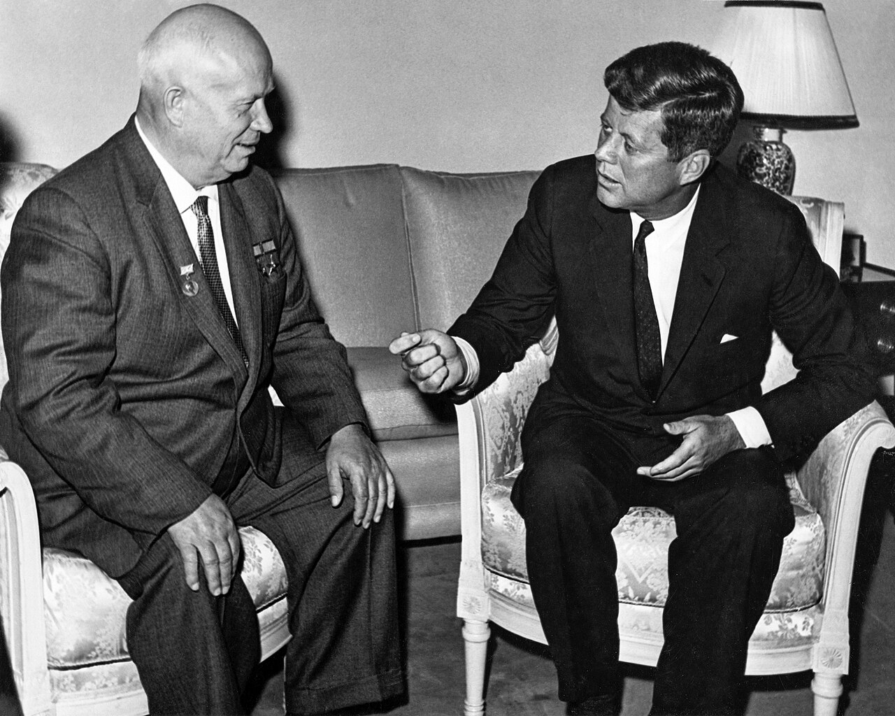
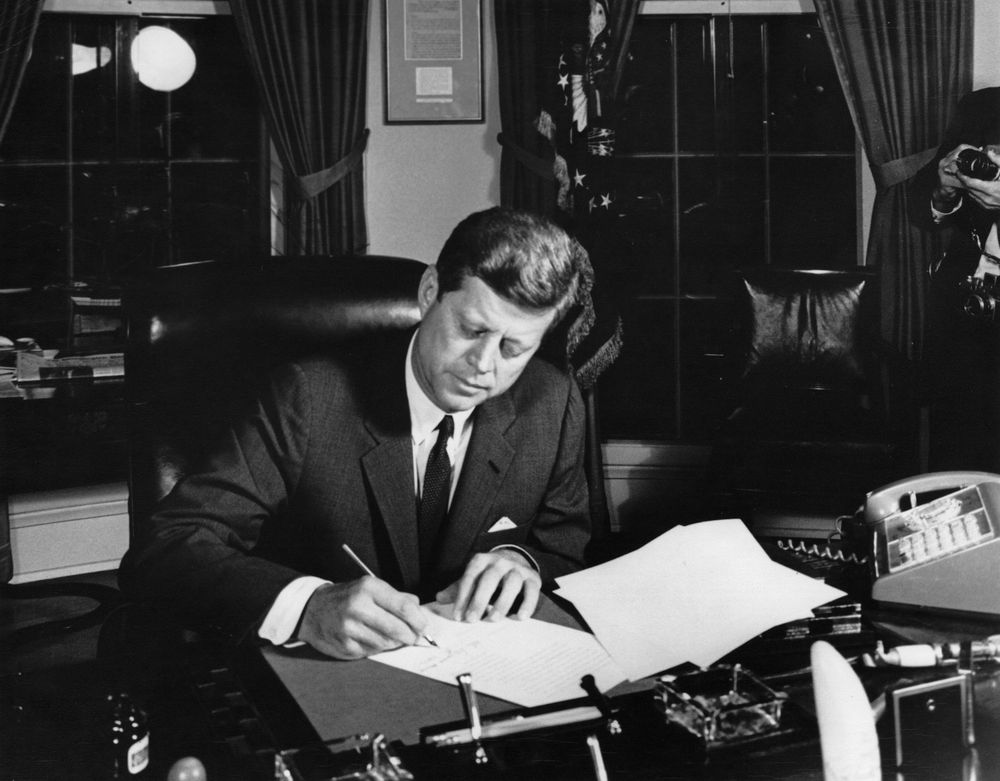
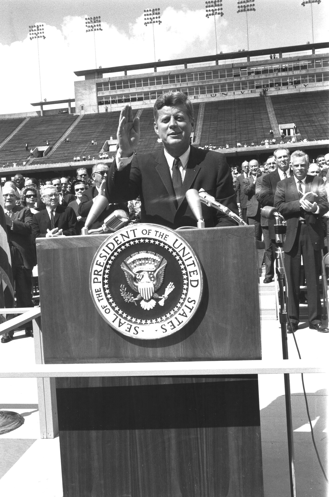

출처: Wikimedia Commons — Cecil W. Stoughton, White House · 퍼블릭 도메인
⏱️ 10초 카드 · 냉전 절정의 미국 (1917~1963)
쿠바 미사일 위기달 탐사 선언베를린 연설최연소 대통령
여는 질문 — 위기의 순간, '이기는 것'과 '파국을 피하는 것' 중 무엇이 더 중요할까?
이름
한국어존 F. 케네디
원어John F. Kennedy
실제 발음존 에프 케네디
로마자John Fitzgerald Kennedy
영어권John F. Kennedy
별칭JFK
미국 · 1917~1963
왜 이 사람인가
냉전이 핵전쟁으로 번질 뻔한 가장 아찔한 순간(쿠바 위기)의 한쪽 결정자예요. 그의 선택은 '강함'이 곧 '밀어붙이는 것'이 아님을 보여 줘요. 우주 경쟁의 방향을 바꾼 인물이기도 하죠. (냉전 → 쿠바·우주 섹션)
생애
부유한 정치 명문가에서 태어났어요. 2차 세계대전 때 어뢰정(PT-109)이 침몰하는 위기에서 부하들을 구한 일로 영웅이 됐고, 그 명성을 발판으로 정치에 뛰어들었죠. 1960년, 43세의 나이로 미국 역사상 가장 젊게 선출된 대통령이 됐어요.
그의 임기는 냉전이 가장 뜨겁던 시기와 겹쳤어요. 1961년 비엔나에서 흐루쇼프와 처음 마주했고, 같은 해 베를린 장벽이 세워지는 걸 지켜봤죠. 1962년 쿠바 미사일 위기에서는 군부의 공습 주장을 누르고 '해상 격리'라는 절충안으로 핵전쟁을 막았어요.
'달에 사람을 보내겠다'는 선언으로 우주 경쟁에 불을 붙였고, 흑인 민권운동에도 점차 목소리를 냈어요. 하지만 1963년 11월, 댈러스에서 암살되며 46세에 생을 마감했죠. 짧았던 임기는 신화처럼 기억되지만, 베트남 개입을 키운 그림자도 함께 있어요.
자료로 보기 — 유묵·사진

비엔나 정상회담 (1961)1961년 비엔나에서 흐루쇼프(왼쪽)와 처음 마주한 케네디(오른쪽). 두 진영의 젊은 지도자와 노련한 지도자가 탐색전을 벌였어요.출처: Wikimedia Commons — U.S. Dept. of State · 퍼블릭 도메인

쿠바 봉쇄 명령에 서명 (1962)1962년 10월 23일, 쿠바 해상 격리(봉쇄)를 명하는 '포고문 3504'에 서명하는 케네디. 13일 위기의 한가운데였죠.출처: Wikimedia Commons — Abbie Rowe, White House · 퍼블릭 도메인

라이스 대학 '달' 연설 (1962)'우리는 달에 가기로 했습니다.' 우주 경쟁을 국가 목표로 선언한 라이스 대학 연설. 7년 뒤 미국은 정말 달에 도착했어요.출처: Wikimedia Commons — NASA · 퍼블릭 도메인
남긴 말
“조국이 당신을 위해 무엇을 해 줄지 묻지 말고, 당신이 조국을 위해 무엇을 할 수 있는지 물으십시오.”
1961년 취임 연설의 가장 유명한 구절. 시민의 책임을 강조했어요. · 출처: 케네디 대통령 취임 연설 (1961)
“우리는 달에 가기로 했습니다. 그것이 쉬워서가 아니라, 어렵기 때문입니다.”
1962년 라이스 대학 연설. 우주 경쟁의 도전을 국가적 목표로 내세웠죠. · 출처: 라이스 대학 연설 (1962)
“나는 베를린 시민입니다. (Ich bin ein Berliner.)”
1963년 장벽에 갇힌 서베를린에서, 자유진영의 연대를 독일어로 외쳤어요. · 출처: 서베를린 연설 (1963)
연표
1917미국 매사추세츠 출생
1943PT-109 침몰 위기에서 부하 구조 (전쟁 영웅)
1961최연소 대통령 취임 · 비엔나 정상회담 · 우주 선언
1962쿠바 미사일 위기 — 핵전쟁을 막다
1963'나는 베를린 시민이다' 연설 · 댈러스에서 암살
전쟁 영웅에서 냉전의 결정자로
명문가 아들이 전쟁 영웅을 거쳐 최연소 대통령이 되고, 냉전의 가장 아찔한 순간들을 지나 비극적으로 끝난 길이에요.
태어난 곳에서 암살된 곳까지 — 실제 좌표 위에 표시했어요.
빛과 그림자위기의 순간 침착하게 파국을 막은 위기관리와 미래를 향한 이상(달 탐사·민권)으로 빛났어요. 하지만 베트남 군사 개입을 크게 키웠고, 중남미 비밀 작전(쿠바 침공 시도 등)을 승인했으며, 화려한 이미지 뒤의 사생활 논란도 있었죠. '신화'와 '실제'를 함께 봐야 할 인물이에요.
더 깊이 (고등·일반)
쿠바 위기의 막후 — 상대에게 출구를 주다
겉으로 쿠바 위기는 케네디의 완승처럼 보였지만, 실제로는 비밀 거래가 있었어요. 미국은 쿠바를 침공하지 않겠다 약속하고, 몇 달 뒤 조용히 터키의 주피터 미사일을 철수했죠. 상대를 완전히 굴복시키지 않고 체면을 지킬 길을 준 것 — 그것이 핵전쟁을 막은 열쇠였어요.
참고: 쿠바 미사일 위기 비밀 합의 관련 사료
베트남이라는 그림자
케네디는 평화의 이미지로 기억되지만, 그의 임기에 베트남의 미군 '군사 고문'이 수백 명에서 1만 6천 명 넘게 늘었어요. 그가 살아 있었다면 전쟁을 키웠을지 줄였을지는 역사가들의 오랜 논쟁이에요. 한 인물을 한 장면(쿠바)으로만 평가하면 안 되는 이유죠.
참고: 케네디 행정부의 베트남 정책
암살과 신화
1963년 댈러스에서의 암살은 미국을 충격에 빠뜨렸고, 케네디를 실제보다 더 큰 '신화'로 만들었어요. 수많은 음모론이 따라붙었죠. 짧은 임기 탓에 그의 진짜 업적과 한계를 차분히 따지기 어렵게 만든 면도 있어요.